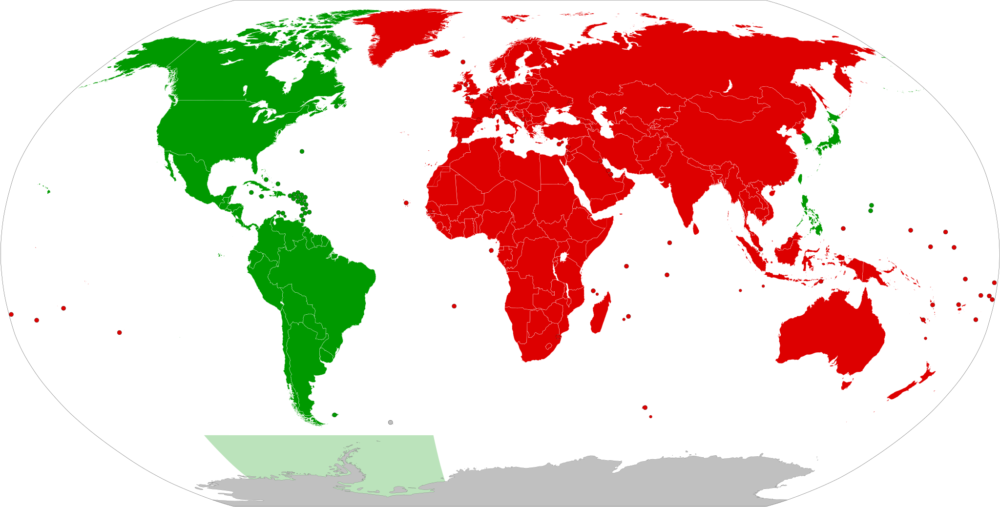
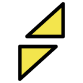
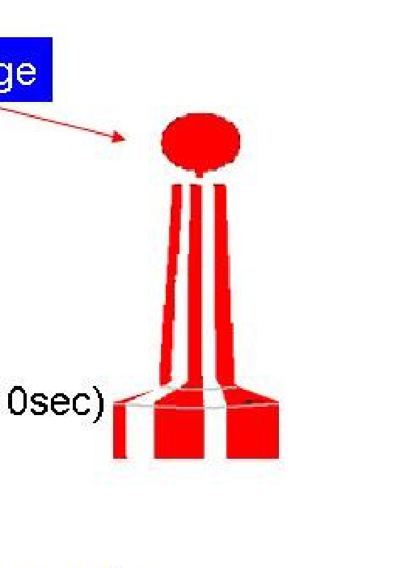

Le Balisage IALA — Les Cinq Familles
Mardi matin, 9h15. En route vers Fethiye — cap 045.
Le Deniz Rüzgarı quitte la baie de Tersane par son extrémité nord. William est à la barre, Emmanuel à côté. À l'entrée du chenal de Fethiye, une série de bouées commence à apparaître. Rouge à gauche. Verte à droite. Et puis une bizarre : noire et jaune rayée, avec deux triangles au sommet.
"Ça, c'est quoi ?" dit William en la pointant.
"Cardinale Nord. Tu passes au nord d'elle. Et là-bas, la rouge avec les bandes — eaux saines, tu peux passer tout autour. Et cette verte conique à tribord — reste dedans le chenal."
Christelle, qui a entendu depuis la descente, monte les trois marches. "Donc le rouge, on le garde à droite en rentrant ?" Emmanuel se retourne doucement. "Non — l'inverse. En IALA A, rouge à gauche en entrant. Bâbord, côté rouge." Christelle fronce les sourcils. "C'est contre-intuitif." Emmanuel : "C'est pour ça que l'examen le demande tous les ans. Ma sœur s'est échouée à Trébeurden en 91 exactement comme ça — elle avait inversé."
William note dans son carnet : IALA A = rouge à gauche en entrant. Trébeurden 91.
[ATTENTION] Christelle a inversé — c'est exactement le piège classique. Mémoriser : IALA A = rouge à GAUCHE en entrant. La sœur d'Emmanuel s'est échouée comme ça à Trébeurden en 91. En IALA B (Amériques) : "red right returning" — c'est l'inverse. La Turquie est en IALA A.
"Il y a un système logique là-dedans ?" dit William en regardant sa carte.
"Tout est logique. Il suffit d'apprendre les codes."
Le système IALA Région A
L'IALA (Association Internationale de Signalisation Maritime) est l'organisation qui standardise le balisage dans le monde entier. Sans cette standardisation, un marin entrant dans un port étranger ne saurait pas quelle bouée éviter. Grâce à l'IALA, les règles sont identiques de Dunkerque à Istanbul.
Il existe deux régions : la Région A et la Région B. Dans la Région A — qui couvre l'Europe, l'Afrique, l'Australie et la majorité de l'Asie — le côté bâbord des chenaux est marqué en rouge. Dans la Région B — qui couvre les Amériques, le Japon et les Philippines — les couleurs sont inversées : bâbord est vert et tribord est rouge. Cette distinction est critique : un marin formé en France qui navigue aux États-Unis doit consciemment inverser ses réflexes.
La France et la Turquie sont toutes deux en Région A. Le balisage du golfe de Göcek suit exactement les mêmes codes que les côtes bretonnes.
Le système IALA Région A comprend cinq familles de marques : latérales, cardinales, eaux saines, danger isolé, et spéciales. Chaque famille a un rôle distinct, une couleur propre, et un feu nocturne caractéristique.

Les deux régions IALA dans le monde. La France et la Turquie sont en Région A : en entrant dans un port, le rouge est à bâbord (à gauche). Aux États-Unis et au Japon (Région B), les couleurs sont inversées — « red right returning ». Un marin qui change de région doit consciemment inverser ses réflexes de balisage latéral.
Famille 1 : Marques latérales
Les marques latérales balisent les bords d'un chenal navigable. Elles indiquent de quel côté vous pouvez passer en toute sécurité. La règle de base est simple : en entrant dans le port (sens conventionnel), gardez le rouge à bâbord (à gauche) et le vert à tribord (à droite).
Le sens conventionnel est défini comme la direction vers le port ou vers la terre — autrement dit, la direction d'entrée depuis la mer ouverte. En France, la règle est : sens conventionnel = en remontant les côtes de gauche à droite sur une carte (sens général vers le nord ou vers l'est). La carte marine indique toujours ce sens par une flèche sur le chenal.
La convention s'applique en entrant dans le chenal (sens conventionnel, généralement vers le port ou vers le haut d'une rivière).
| Côté | Couleur | Forme | Feu nuit |
|---|---|---|---|
| Bâbord (gauche en entrant) | Rouge | Cylindrique (boîte) | Rouge — rythme quelconque |
| Tribord (droit en entrant) | Vert | Conique | Vert — rythme quelconque |

Une bouée latérale verte conique (marque tribord) en situation réelle. En entrant dans un port en Région A, gardez-la à tribord (à droite). Sa forme conique la distingue immédiatement de la cylindrique rouge de bâbord — même de loin, même par mauvaise visibilité, la silhouette suffit à identifier le côté du chenal.
Si le sens conventionnel n'est pas évident (estuaire sans flèche, rade ouverte), la règle de fond est de suivre le sens du flot de marée montante ou de se référer à la carte. En sortant du port, les marques passent de l'autre côté du bateau : ce qui était à bâbord est maintenant à tribord de votre perspective — mais la marque elle-même n'a pas bougé.
La balise de chenal préféré est une variante des latérales pour les cas où deux chenaux se rejoignent. Elle indique le chenal à favoriser par la couleur dominante de son corps et de son feu : feu rouge à 2+1 éclats = chenal préféré à tribord ; feu vert à 2+1 éclats = chenal préféré à bâbord.
Voir concepts/marques-laterales, concepts/balisage-iala-region-a.
Famille 2 : Marques cardinales
Les marques cardinales indiquent de quel côté passer par rapport à un danger. Le nom de la marque correspond au côté passable : la marque Nord s'identifie au nord du danger.

Les topmarks sont la clé — deux cônes noirs :
| Marque | Topmarks | Corps | Feux |
|---|---|---|---|
| Nord | ↑↑ pointes en haut | Noir-jaune | Q ou VQ (continu rapide) |
| Sud | ↓↓ pointes en bas | Jaune-noir | Q(6)+LFl ou VQ(6)+LFl |
| Est | ◇ base à base | Noir-jaune-noir | Q(3) ou VQ(3) |
| Ouest | ✦ tête à tête | Jaune-noir-jaune | Q(9) ou VQ(9) |
Astuce mnémonique : Nord = les pointes montent comme un N tracé à la main. Sud = pointes vers le bas. Est = les bases se touchent comme un E couché. Ouest = comme un W avec les pointes qui se rencontrent au milieu.
Pour utiliser une cardinale en navigation, commencez par identifier le voyant (les deux cônes) avant tout autre chose — c'est lui qui donne la direction, pas la couleur du corps qui peut être difficile à distinguer de loin ou de nuit. Une fois la direction connue, la règle est absolue : passez du côté indiqué par le nom.
Les feux nocturnes suivent un système mémorable basé sur l'horloge. Imaginez un cadran : Nord est à 12h, Est à 3h, Sud à 6h, Ouest à 9h. Le nombre d'éclats dans le groupe correspond à l'heure : Nord = continu (aucun groupe à compter — feu permanent), Est = 3 éclats, Sud = 6 éclats + un long (le "+" représente l'aiguille supplémentaire pour aller jusqu'à 6), Ouest = 9 éclats.
Danger nouveau : une épave récente ou un haut-fond non encore inscrit sur les cartes est signalé par deux marques cardinales identiques superposées, avec un feu à scintillements très rapides. C'est le signal d'alerte maximale.
Les quatre illustrations ci-dessous détaillent chaque marque cardinale individuellement, avec son voyant, ses couleurs et son feu nocturne.
Marque cardinale Nord — Le voyant porte deux cônes noirs pointes en haut (↑↑), rappelant la lettre N tracée à la main. Le corps est noir en haut, jaune en bas. Le feu nocturne est un scintillement continu (Q ou VQ) — pas de groupe à compter, il clignote sans interruption. La règle : passez au nord de cette marque, le danger est au sud.

Marque cardinale Nord : voyant deux cônes pointes en haut, corps noir sur jaune, feu scintillant continu. Passez toujours au nord de cette marque.
Marque cardinale Est — Le voyant montre deux cônes base contre base (◇), évoquant un E couché ou un losange. Le corps est noir-jaune-noir (bande jaune au milieu). Le feu nocturne produit 3 éclats groupés (Q(3) ou VQ(3)) — 3 comme 3 heures sur le cadran de l'horloge, position de l'Est. Passez à l'est de la marque.

Marque cardinale Est : voyant deux cônes base contre base, corps noir-jaune-noir, feu à 3 éclats. Passez à l'est de cette marque.
Marque cardinale Sud — Le voyant porte deux cônes pointes en bas (↓↓), l'inverse exact de la Nord. Le corps est jaune en haut, noir en bas. Le feu nocturne produit 6 éclats suivis d'un éclat long (Q(6)+LFl ou VQ(6)+LFl) — 6 comme 6 heures sur le cadran. Passez au sud de la marque.

Marque cardinale Sud : voyant deux cônes pointes en bas, corps jaune sur noir, feu à 6 éclats + un long. Passez au sud de cette marque.
Marque cardinale Ouest — Le voyant montre deux cônes pointe contre pointe (✦), formant une sorte de sablier ou de W vu de côté. Le corps est jaune-noir-jaune (bande noire au milieu). Le feu nocturne produit 9 éclats (Q(9) ou VQ(9)) — 9 comme 9 heures, position de l'Ouest sur le cadran. Passez à l'ouest de la marque.

Marque cardinale Ouest : voyant deux cônes pointe contre pointe, corps jaune-noir-jaune, feu à 9 éclats. Passez à l'ouest de cette marque.
Voir concepts/marques-cardinales.
Famille 3 : Marques d'eaux saines
La marque d'eaux saines est une balise de bonne nouvelle : elle signale qu'il n'y a aucun danger dans les eaux environnantes. On peut passer de tous les côtés. On la trouve typiquement en tête de chenal (avant les premières latérales), à l'entrée d'une passe, ou à mi-chenal pour indiquer un axe navigable.
Son identification est fiable et mémorable : corps rayé verticalement rouge et blanc, voyant sphère rouge. La nuit, son feu est blanc — isophase (durées égales lumière/obscurité), à occultations (lumière dominante), ou Morse A (un point, un tiret : · –). Tous ces rythmes blancs sur un corps rayé rouge-blanc = eaux saines, on peut s'en approcher.
À l'examen, le piège classique est de confondre la marque d'eaux saines avec le danger isolé (également blanc nocturne) : la différence tient au voyant — sphère rouge unique = eaux saines, deux boules noires = danger isolé.
Corps à bandes verticales rouges et blanches. Topmark : sphère rouge. Feu : Iso, Oc, 1 éclat long. Passage possible tout autour — souvent en tête de chenal.

La marque d'eaux saines avec ses bandes verticales rouges et blanches et son voyant sphérique rouge. On la reconnaît de loin grâce à ses rayures verticales — la seule bouée du système IALA avec ce motif. Passage possible de tous les côtés : elle indique l'absence de danger dans les eaux environnantes.
Voir concepts/marques-eaux-saines.
Famille 4 : Marques de danger isolé
La marque de danger isolé signale un danger ponctuel — un rocher, une épave, un haut-fond localisé — qui est entouré d'eaux navigables de tous les côtés. On peut donc passer à bâbord ou à tribord de la marque, mais en s'en tenant largement écarté.
Son identification : corps noir avec une ou deux bandes rouges horizontales, voyant deux boules noires superposées. La nuit, son feu est blanc à 2 éclats — c'est le seul feu blanc avec exactement 2 éclats groupés dans le système IALA, ce qui la rend impossible à confondre une fois mémorisée.
La logique est cohérente avec son nom : "danger isolé" — il y a un seul danger localisé, les eaux autour sont saines. C'est différent d'une zone à éviter entièrement : vous pouvez rester dans les parages, mais ne passez pas dessus.
Corps noir-rouge-noir. Topmark : deux sphères noires superposées. Feu : Fl(2). Danger ponctuel — les eaux navigables tout autour, mais ne passez pas dessus.
La marque de danger isolé signale un écueil ponctuel (rocher, épave) entouré d'eaux navigables. Les deux boules noires superposées sont son signe distinctif — ne les confondez pas avec la sphère rouge unique de la marque d'eaux saines. Contournez de tous les côtés en gardant vos distances, mais ne passez jamais directement au-dessus.
Voir concepts/marques-danger-isole.
Famille 5 : Marques spéciales
Les marques spéciales ne signalent ni un chenal, ni un danger, ni une eau saine : elles délimitent une zone à signification particulière définie par les autorités locales. Leur seule caractéristique commune est la couleur jaune — corps jaune, voyant croix jaune, et un feu jaune la nuit si équipé.
Exemples d'utilisations courantes : câbles sous-marins (défense d'ancrer), zones d'aquaculture, zones de baignade ou de sports nautiques, champs de mines désaffectés, zones de régate, bouées de recherche océanographique, délimitation de zones militaires d'exercice.
La règle pratique : quand vous voyez du jaune, consultez la carte avant de pénétrer dans la zone. La marque ne précise pas pourquoi la zone est délimitée — c'est la carte ou le portulan local qui le dit.
Corps jaune, forme quelconque. Feu jaune. Indiquent des zones réglementées, câbles, activités spéciales, zones de baignade.

La marque spéciale est entièrement jaune avec un topmark en croix (×). Elle délimite des zones à signification particulière : câbles sous-marins (interdiction d'ancrer), zones de baignade, aires de mouillage réglementées, zones militaires. Quand vous voyez du jaune, consultez la carte pour connaître la restriction applicable.
Voir concepts/marques-speciales.
Piège classique : bâbord et tribord dépendent du sens de navigation. En entrant dans le port de Fethiye (sens conventionnel : depuis la mer vers le port), la rouge est à bâbord et la verte à tribord. En ressortant, c'est l'inverse. La carte précise toujours le sens conventionnel par une flèche.
Marques spéciales de port
Les marques de musoir désignent les petits fanaux ou panneaux colorés placés à la pointe extrême des jetées et digues d'entrée d'un port. Ils reprennent les couleurs latérales standards : feu rouge à bâbord, feu vert à tribord en entrant. En approchant un port de nuit, les musoirs sont souvent les premières lumières de port que vous distinguez — ils cadrent visuellement l'entrée de la passe.
Les marques de plage (groupe 3 IALA) sont des bouées jaunes qui délimitent les zones de baignade et les chenaux traversiers de plage. Elles n'ont pas de feu la nuit — à ne pas confondre avec les marques spéciales hors-groupe (voyant croix jaune, feu jaune éventuel).
La balise de chenal préféré (déjà décrite dans les latérales) indique le meilleur chenal à deux voies. Sa couleur dominante indique le côté préféré pour les navires de fort tirant d'eau.
Voir concepts/marques-de-musoir, concepts/marques-de-plage, concepts/marques-chenal-prefere.
Chenal de Fethiye (Fethiye Limanı) : En approchant de Fethiye depuis le sud-ouest, le chenal est balisé avec des marques latérales IALA A. Les premières bouées rouges cylindriques (bâbord) vous indiquent la limite ouest du chenal. Une cardinale Nord (noire-jaune, topmarks pointes en haut) marque un rocher immergé à l'entrée — vous passez au nord d'elle. Les fonds dans le chenal principal sont de 8–15 m, largement suffisants pour un gulet.
Question 1 : En entrant dans la marina de Göcek, vous voyez une bouée rouge cylindrique sur votre bâbord (vous venez de la mer). Que signifie-t-elle et que faites-vous ?
- A) Marque bâbord (IALA A) — gardez-la à bâbord en entrant au port
- B) Marque tribord (IALA A) — gardez-la à tribord en entrant au port
- C) Marque cardinale — passez au nord de cette bouée
Voir la réponse
Réponse : A — En système IALA région A (Europe, Méditerranée), la marque bâbord est rouge et cylindrique. Elle se laisse à bâbord quand on remonte dans le sens conventionnel (en entrant au port). La règle mnémotechnique : "rouge à gauche en entrant" (IALA A). En système B (Amériques), c'est l'inverse.Question 2 : Une marque avec un corps noir en haut et jaune en bas, surmontée de deux cônes pointes opposées (l'une vers le haut, l'autre vers le bas), indique :
- A) Cardinale Est — passez à l'est de cette marque
- B) Cardinale Ouest — passez à l'ouest de cette marque
- C) Cardinale Sud — passez au sud de cette marque
Voir la réponse
Réponse : B — Cardinale Ouest : corps jaune en haut, noir en bas (J-N), topmarks deux cônes pointes opposées ("X" vu de côté, ou sablier). Mémo couleurs : N (nord) = noir au-dessus, S (sud) = jaune au-dessus, E (est) = noir-jaune-noir, W (ouest) = jaune-noir-jaune. Passez toujours du côté indiqué par la marque (ici : à l'ouest).Question 3 : Devant vous : une bouée à rayures verticales rouges et blanches, avec une sphère rouge en topmark. Que signifie-t-elle ?
- A) Danger isolé — eau peu profonde tout autour, évitez
- B) Marque d'eaux saines — eau navigable tout autour, souvent placée en tête de chenal
- C) Marque spéciale (travaux, mouillage interdit) — passez au large
Voir la réponse
Réponse : B — Corps rayé rouge-blanc vertical + sphère rouge = marque d'eaux saines (safe water mark). Les eaux environnantes sont navigables dans toutes les directions. La marque de danger isolé (à éviter) est noire avec bandes horizontales rouges et deux sphères noires en topmark.Question 4 : Vous longez la côte et apercevez une marque jaune en forme de croix (topmark X). Quelle est sa signification ?
- A) Cardinale Est — passez à l'est
- B) Marque de danger isolé
- C) Marque spéciale — zone réglementée (mouillage, câble, zone militaire…)
Voir la réponse
Réponse : C — La marque spéciale est entièrement jaune avec un topmark en X jaune. Elle délimite une zone à signification particulière (zone de mouillage, câble sous-marin, zone militaire, circuit de course…). Elle n'indique pas de danger de navigation mais une réglementation à respecter. Ne pas confondre avec les cardinales (corps bicolore noir/jaune).Göcek à Fethiye : 12 milles, 1h45 de route. L'équipage est impressionné par les falaises et les tombeaux lyciens visibles depuis l'eau. William, lui, a maintenant les bouées en tête. Mais ce qu'il doit apprendre ensuite, c'est à lire la carte qui lui permet de planifier la route avant de lever l'ancre.
Session 2.2 — La Carte Marine : lecture, symboles et mesure de distance.